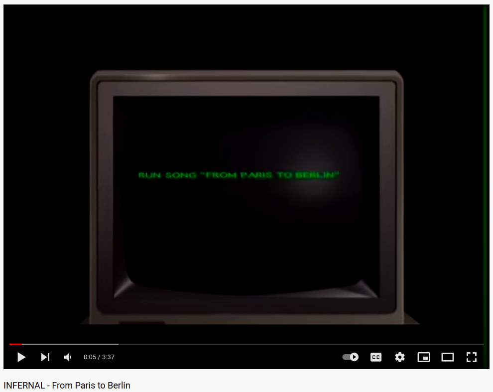

Where do I come from and how did I get here?
Manchester
→ Durham
→ Essex
→
→ Amsterdam
→ Paris
→ Berlin

Many years ago...
I studied History at the University of Essex but I couldn't stay still. I moved to Prague for one year during my studies and fell so
in love with my time there that it was quite hard to bring my feet back to British soil in order to finish the last year of my degree.
I soon went back on the run however and moved to Amsterdam where I worked as an Au Pair by day and explored by night. But something
wasn't quite right so I joined my friends in Paris where I ended up living for 3 years.
I met a professor there, whilst working for the East European Film Bulletin, who runs a film restoration course in Berlin and I was convinced this would be my next step.
Before long I had interviewed for a place and got in 😍.
💚
💛
💔
But the HTW broke my heart when, with little notice before the start of the school year, they made a change to the language
requirements needed to enroll. I unsurprisingly failed their last minute B2 German exam and quickly had to come up with a plan B for my life in Germany.
So I worked as a Customer Service Team Leader of 30 fantastic agents for a while before finding the Web Development Course at the DCI and securing my place on a path that I am really excited to walk down.